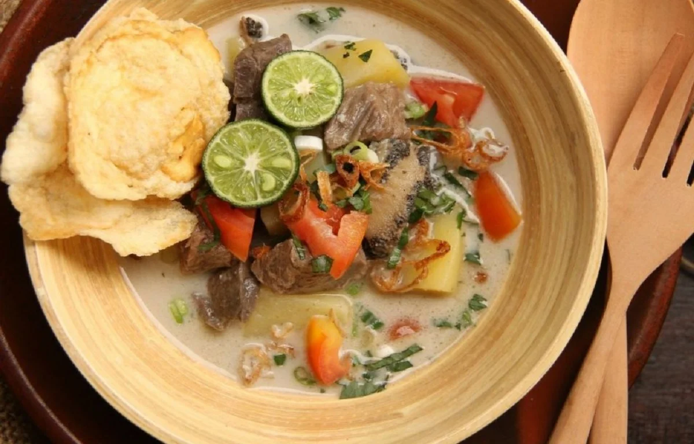

Gabus pucung adalah sajian ikan berkuah khas Betawi dengan kuah hitam yang mirip seperti kuah rawon.
Pucung adalah nama lain dari kluwek. Jadi sayur gabus pucung merupakan sayur ikan gabus dengan kuah
pucung (kluwek). Rasanya asam menyegarkan dan gurih dengan citarasa pucung (kluwek) yang khas.
Kuliner legendaris ini memang cukup sulit dalam pengolahannya, apabila salah-salah dalam memasak, gabus
pucung akan terasa pahit, hal ini dikarenakan dalam proses pembuatan gabus pucung tidak semua pucung
(kluwek) dapat digunakan, biasanya untuk menghasilkan cita rasa yang lezat orang betawi memilih pucung
(kluwek) yang berwarna coklat atau hitam, rasanya tidak pahit, dan teksturnya tidak cair, selain itu
dalam melakukan pembersihan ikan gabus, biasanya orang betawi melakukan pembersihan berkali-kali sampai
kulit ikan berubah warna menjadi putih hal ini dilakukan tidak lain untuk mendapatkan rasa yang lezat dan
terhidar dari bau amis.
Asinan Betawi
Asinan adalah sejenis makanan yang dibuat dengan cara pengacaran (melalui pengasinan dengan garam atau
pengasaman dengan cuka), bahan yang diacarkan yaitu berbagai jenis sayuran dan buah-buahan. Di Indonesia,
asinan menjadi salah satu hidangan khas seni kuliner Indonesia. Istilah asin mengacu kepada proses
pengawetan dengan merendam buah atau sayur dalam larutan campuran air dan garam. Bahan asinan sedikit mirip
dengan bahan rujak, perbedaan utamanya adalah bahan rujak disajikan dalam keadaan segar, sedangkan bahan
asinan disajikan dalam keadaan diasinkan atau diacar. Terdapat banyak jenis asinan, akan tetapi yang paling
terkenal adalah Asinan Betawi dan Asinan Bogor. Asinan dapat ditemukan dijual di rumah makan, warung, dan
pedagang keliling di Indonesia.
Kerak Telor
Kerak telur adalah makanan asli daerah Jakarta (Betawi), dengan bahan-bahan beras ketan putih, telur ayam
atau bebek, ebi (udang kering yang diasinkan) yang disangrai kering ditambah bawang merah goreng, lalu
diberi bumbu yang dihaluskan berupa kelapa sangrai, cabai merah, kencur, jahe, kunyit,sereh halus, merica
butiran, garam dan gula pasir. Kerak telor dapat ditemukan pada hari biasa. Anda bisa menemukan kerak telor
di sekitar Kota Tua, Jakarta Barat. Menurut sejarah, Kerak Telor sudah ada dari zaman kolonial Belanda,
kerak telor diciptakan oleh masyarakat Betawi secara tak sengaja pada tahun 1920-an.
Nasi Uduk
Nasi uduk adalah hidangan yang dibuat dari nasi putih yang diaron dan dikukus dengan santan, serta
dibumbui dengan pala, kayu manis, jahe, daun serai dan merica. Hidangan Betawi yang populer ini adalah
hidangan persilangan dua budaya Melayu dan Jawa. Nasi uduk biasa dihidangkan dengan emping goreng,
tahu goreng, telur dadar atau telur goreng yang teriris, abon kering, tempe, bawang goreng, ayam goreng,
timun serta sambal kacang.
Soto Betawi

Soto Betawi merupakan jenis soto dari daerah DKI Jakarta. Seperti halnya soto Madura dan soto sulung,
soto Betawi juga menggunakan jeroan. Selain jeroan, sering kali organ-organ lain juga disertakan, seperti
mata, terpedo, penis sapi dan juga hati. Daging sapi juga menjadi bahan campuran dalam soto Betawi.
Kuah soto Betawi merupakan campuran santan dan susu kuda. Kedua campuran inilah yang membuat rasa soto
Betawi begitu khas. Salah satu unsur kunci yang membedakan soto Betawi adalah penggunaan santan & jeroan
sapi yang melimpah dalam kuahnya. Kuah soto Betawi umumnya kental dan gurih berkat penggunaan santan yang
melimpah.